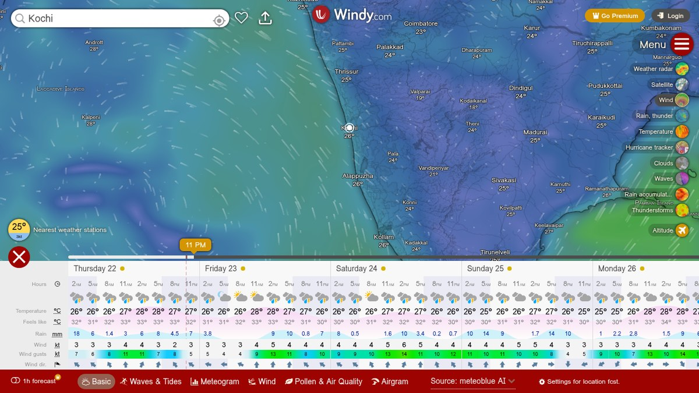
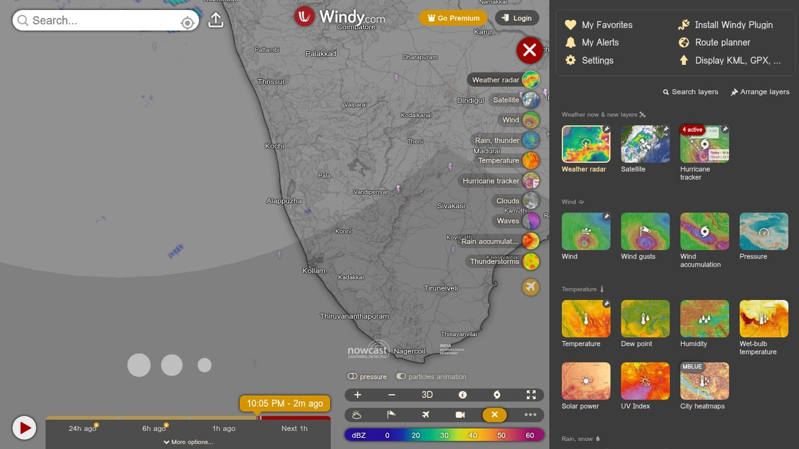

Windy.com: free animated weather forecasts and rain radar for India
Animated wind and rain forecasts on one map, plus near-real-time satellite and rain radar, with three forecast models to compare. Free, no account needed. Here is what the official pages confirm and what our hands-on test over India found.
Quick facts
- Free animated weather maps in your browser; no sign-up needed.
- Forecast layers for wind, rain, temperature, clouds, waves, UV index and more, plus near-real-time satellite and weather radar imagery.
- Switch between ECMWF (9 km), GFS (22 km) and ICON (13 km) forecast models.
- The radar overlay carried an on-map credit to the India Meteorological Department in our India-view test.
- Optional Premium adds hourly steps and archives: ₹759/year as a recurring subscription or ₹1,099 as a one-time year, prices displayed on 22 October 2026.
- Made by Windyty SE, a company registered in Prague, Czech Republic.
What we tested
We used windy.com in a desktop browser with no account on 22 October 2026. One distinction matters throughout: the wind, rain and temperature layers are model forecasts drawn on the map, while the radar and satellite layers are near-real-time observations with their own displayed timestamps.
- The homepage opened over India with an animated wind-particle forecast layer, a local forecast panel, and a forecast timeline running two weeks ahead.
- We searched "Kochi". The suggestions correctly offered Kochi (Ernakulam, India) alongside Kochi, Japan, one with a weather-station reading. Picking the Kerala Kochi recentered the map and opened a forecast panel for Thursday 22 to Monday 26 October.
- The free forecast showed temperature, feels-like, rain in millimetres (18 mm predicted in the 2 AM Friday slot), and wind in knots with gusts and direction arrows, in three-hour steps. Its source was labeled "meteoblue AI", with tabs for Basic, Waves and Tides, Meteogram, Wind, Pollen and Air Quality, and Airgram views.
- Switching on the Weather radar layer brought up a near-real-time radar view with a dBZ intensity scale (0 to 60) and a playback timestamp reading "2m ago" when we checked, plus an on-map credit to the India Meteorological Department. Echoes over Kochi were light at test time.
- The layer gallery offered more free overlays: satellite imagery, clouds, waves, rain accumulation, thunderstorms, dew point, humidity, wet-bulb temperature, solar power, UV index and city heatmaps, plus a hurricane tracker.
- A model selector let us switch between ECMWF 9 km, GFS 22 km and ICON 13 km forecasts.


All of this worked without signing in.
Free vs Premium
Everything above is in the free tier. Tapping "Go Premium" opened the paid plan with two options, both priced in rupees as displayed on 22 October 2026: ₹759.00 per year as a recurring annual subscription that auto-renews (marked "Save -45%"), or ₹1,099.00 as a one-time purchase covering one year with no renewal. Premium adds a 1-hour forecast step (the free forecast shows three-hour steps, and the "1h forecast" tab carries a lock icon), a 15-day outlook, forecast updates at least four times a day, a 24-hour loop for radar and satellite, radar and satellite archives going back one year, and more detailed forecast maps.
What you can use it for
- Watching rain bands and cloud cover on near-real-time radar and satellite layers, where coverage exists.
- Checking predicted rain in millimetres before a commute, event or trip.
- Comparing three independent forecast models when the weather really matters.
- Reading wind and wave forecast layers along the coast.
- Following active cyclones on the hurricane tracker layer during storm season.
Limits to know
- Wind, rain and temperature layers are model forecasts, not measured weather. Radar and satellite layers are near-real-time observations with displayed timestamps.
- Radar coverage depends on ground radar networks. Our single Kochi check showed only light echoes at test time and does not establish radar coverage across India.
- Forecasts are predictions, and Windy is not a substitute for the IMD's official warnings for safety decisions.
- Free forecasts advance in three-hour steps; the 1-hour step is Premium.
- We tested the desktop browser version only, not the Android or iOS apps.
Privacy
Browsing the maps needs no account. Windy's privacy policy names the controller as Windyty, SE, Strakonická 3363/2d, 150 00 Prague 5, Czech Republic, and says the company follows the GDPR. The policy states: "We will never sell your personal data to third parties," while noting that some data is shared with key partners such as hosting and analytics providers that meet GDPR standards. In our test we saw no ads on the map, but that is a limited observation from one session and is not proof of how Windy handles data. That is the provider's own policy statement plus our page-level observation; we did not audit their servers or network.
Access from India
Our session offered India views: the map opened centered on India, the radar layer carried an India Meteorological Department credit, and Premium prices displayed in rupees. We did not test from an Indian internet connection, so availability from India is not independently verified; we encountered no sign-up wall or region gate in our session.
The verdict
If you have ever wanted to actually see the weather instead of reading a single number, this is the map to open: animated wind and rain forecasts, IMD-credited rain radar and three forecast models, all free with no account: windy.com